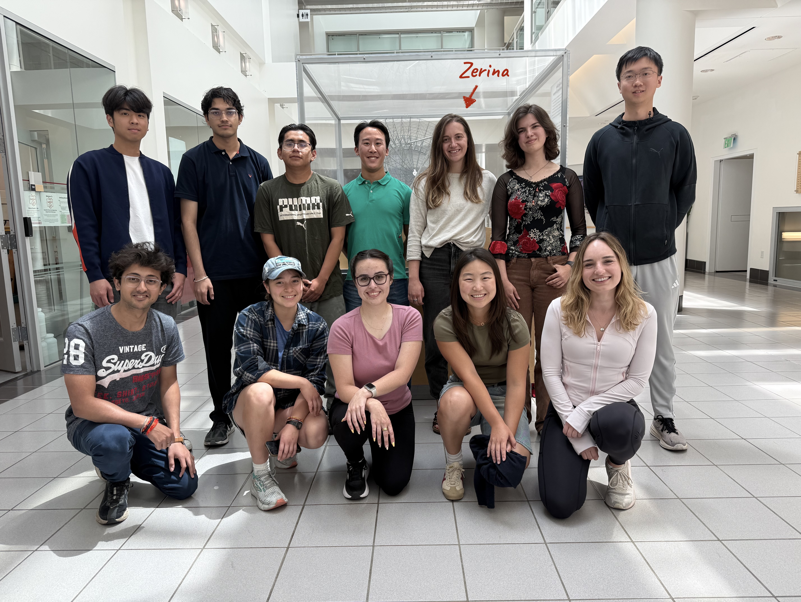

We are a curiosity-driven research lab focused on inventing new wireless sensing systems. Our work spans wireless communication, energy harvesting, sensing, and energy-efficient computing. We believe the next generation of wireless sensing systems must be radically more efficient, pushing the limits of how little energy a device needs to sense, compute, and communicate. Our research explores fundamental technologies that enable this vision, with applications in ubiquitous computing, robotics, and bioelectronics.
